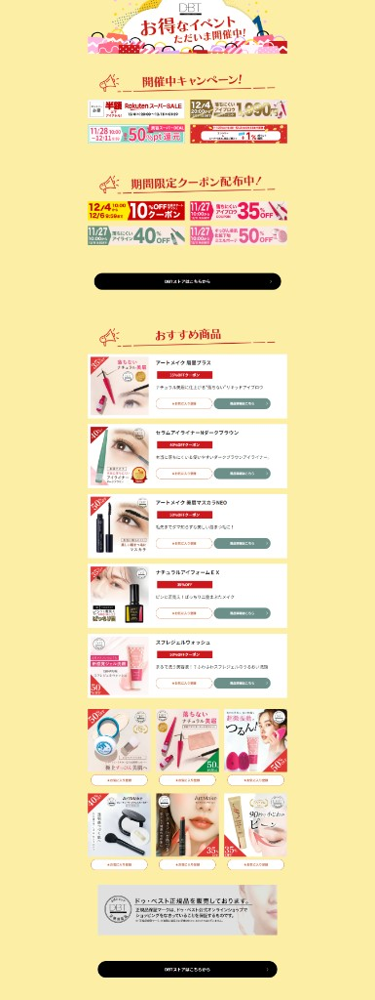
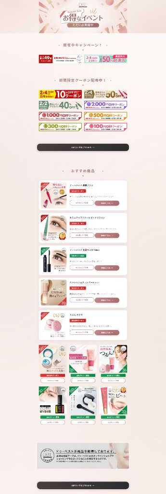

この事例のポイント
ドゥベストの楽天ショップで長く使われていたセール＆クーポンまとめページのデザインリニューアルを、Cursor だけでデザイン設計からコーディングまで完結 させた事例です。
月内リソースで対応できる簡易的なリニューアルとして実施しましたが、見た目の印象は大きく変わりました。
ビフォー・アフター
Before（リニューアル前）
黄色背景のポップなデザイン。長く運用されてきたフォーマットで、情報は整理されているものの、やや古い印象がありました。

After（リニューアル後）
ピンク〜ベージュ系の落ち着いたトーンに変更し、女性向けに特化したテイスト にリニューアル。見出し画像も刷新し、全体的に洗練された印象になっています。

実際のサイト（ 実ページはこちら ）に触れるとわかりますが、CSSアニメーション も取り入れており、オンマウスで要素に動きがある今風のUIに仕上がっています。スマホ対応も済みです。
Cursor でどう作ったか
今回の制作は すべて Cursor 上で完結 しています。
制作の流れ
- 自然言語で相談 — 「女性向けのテイストにしたい」「今風のUIにしたい」「CSSアニメーションを入れたい」といった要望をチャットで伝える
- Cursor がデザイン＆コード生成 — HTML/CSSをまとめて出力してくれる
- プレビューで確認→微調整 — 気になるところをチャットで指示して修正
元ページがあるとはいえ、おおよその形は10〜20分で完成。細かな色味の調整やアニメーションの追加を入れても 1時間以内 で制作できました。
SVG画像もCursorが生成
見出し部分に使われている装飾画像は、Cursor が自動生成した SVG 画像 です。Cursor は SVG ベースの画像生成であれば対応してくれるので、簡単なビジュアル素材はデザイナーに依頼せずにそのまま作れます。
成果
- 長年変わらなかったページデザインを、月内リソースの範囲内でリニューアル完了
- デザイン設計〜コーディングまで 1時間以内 で完了（従来なら数日〜1週間のタスク）
- 女性ターゲットに合ったテイストへの転換で、ページの印象が大幅にアップ
- CSSアニメーション・スマホ対応まで含めた今風のUIを実現
再利用可能ポイント
- Cursor に元ページを読ませてリニューアル という手法は、他の楽天ショップや LP にもそのまま応用可能
- 「自然言語で相談→コード出力→微調整」のワークフローは、コーディング知識が少なくても実践できる
- SVG画像の自動生成は、ちょっとした見出し画像・アイコン・装飾に使い回せる
課題・改善点
- 写真素材（商品画像など）の生成はCursorの守備範囲外なので、別途用意が必要
- 楽天の独自仕様（GOLD / RMS の制約）に合わせた調整は人手で行う部分が残る
- 今回は簡易リニューアルのため、より大がかりな改修では追加の工数が発生する可能性あり